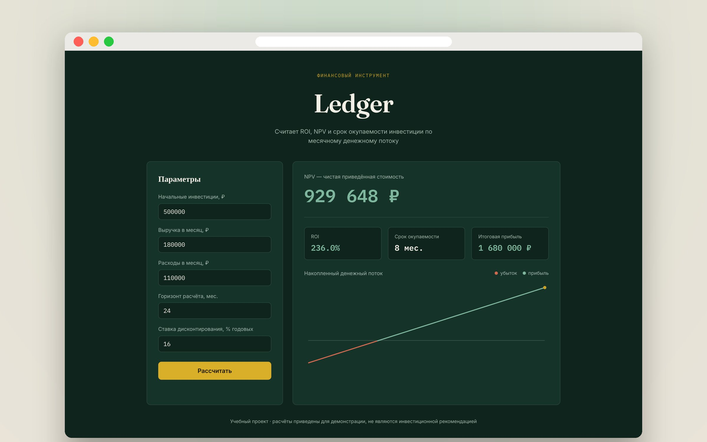
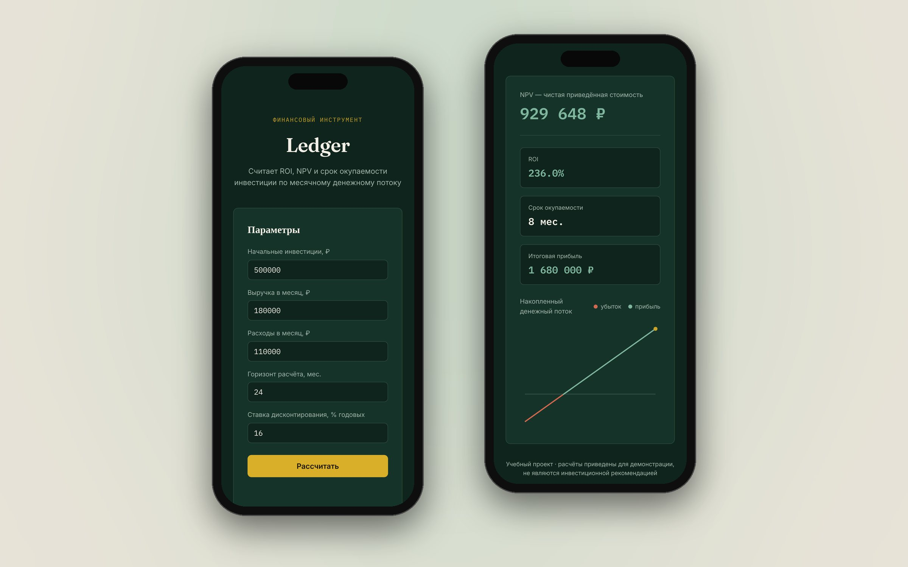

Ledger
Финансовый калькулятор, который за секунду отвечает на вопрос «стоит ли вкладываться»: считает NPV, ROI и срок окупаемости по месячному денежному потоку и показывает, когда проект выходит в плюс. Дизайн и код — мои, без фреймворков и библиотек.

Задача
Оценка инвестиции обычно живёт в таблицах: формулы, ячейки - легко ошибиться. Я хотела сделать инструмент, где достаточно ввести пять чисел, и сразу увидеть ответ и полноценную картину: в какой месяц вложения окупятся и сколько проект принесёт.
Здесь пригодилось моё экономическое образование: формулы NPV и ROI я знаю не по документации, а по учёбе.
Как считает
-
NPV
Чистая приведённая стоимость
Месячный поток (выручка минус расходы) дисконтируется по месячной ставке и суммируется за весь горизонт, минус начальные инвестиции
-
ROI
Рентабельность вложений
Сколько процентов сверх вложенного принесёт проект за выбранный период
-
Срок
Окупаемость
Первый месяц, в котором накопленный денежный поток становится неотрицательным. Если такого нет — калькулятор так и пишет
Интерфейс
Слева — параметры, справа — ответ. Главное число, NPV, крупно наверху: это первое, на что смотрят. Ниже — ROI, срок окупаемости и итог, а под ними график накопленного денежного потока: линия меняет цвет с рыжего на зелёный в момент, когда проект выходит в плюс.
Визуально — спокойный «финансовый» стиль: глубокий зелёный, как у бумажных бухгалтерских книг, золотая кнопка действия и моноширинный шрифт для цифр, чтобы разряды стояли ровно.
#0F241C Панели
#16332A Действие
#C9A227 Прибыль
#7FB69E
Шрифты: Fraunces — заголовки, Inter — текст, IBM Plex Mono — цифры


Технические решения
- График на чистом Canvas API — без библиотек. Canvas подстраивается под плотность пикселей экрана, поэтому линия чёткая и на Retina
- Цвет по смыслу — каждый отрезок графика окрашивается отдельно: ниже нуля рыжий, выше — зелёный
- Анимация главного числа — NPV «докручивается» до нового значения с плавным замедлением через requestAnimationFrame
- Валидация — понятные сообщения вместо ошибок: пустые поля, отрицательные значения, горизонт больше 10 лет
- Адаптив и перерисовка — при изменении размера окна график перерисовывается под новую ширину
Чему научилась
Рисовать данные без готовых библиотек и переводить экономические формулы в понятный интерфейс: человеку нужен не расчёт, а ответ — окупится или нет и когда.